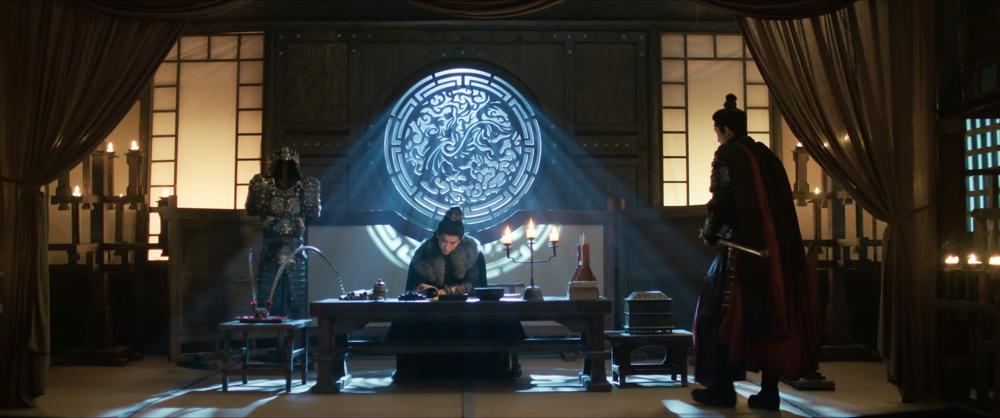
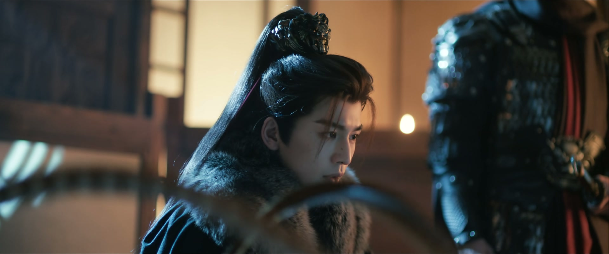
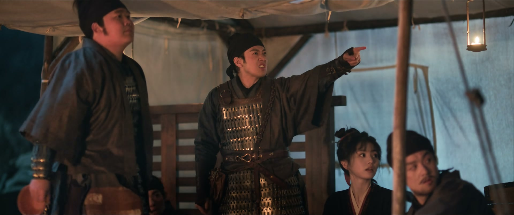
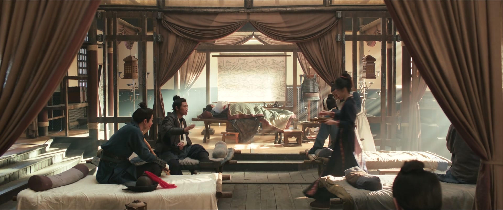
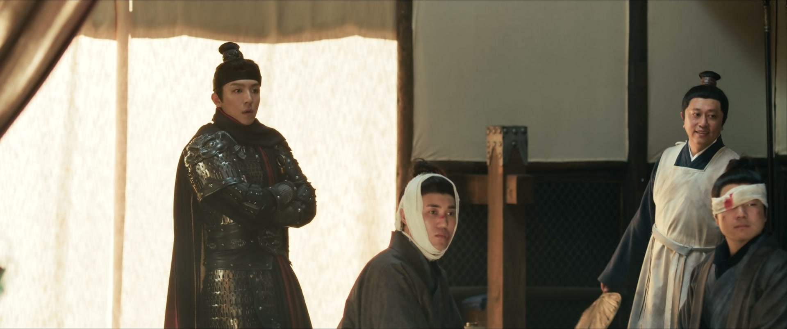
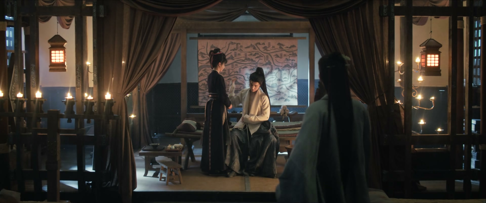
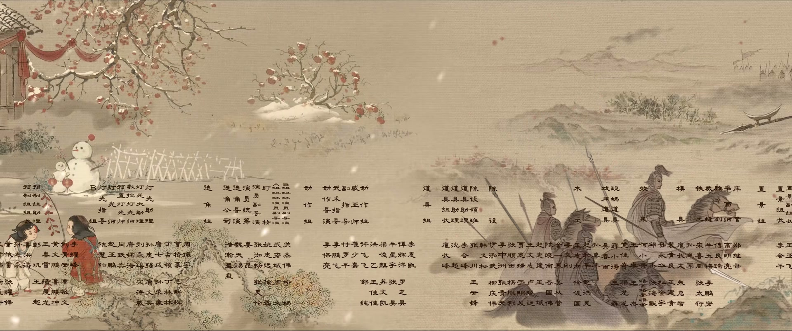

越界的情分，要用规矩圈住
情境：长公主偷偷离宫上山，侯爷先是当头斥责，末了还是命人好生照应。
遇到这种情况，可以这样做
- 热情一旦越了规矩，就成了添乱。
- 被数落不委屈，认错要干脆。
- 真正在乎一个人，是替他守住分寸，而不是由着性子靠近。

Drama Recap · 剧情图文总结
第 24 集 · 孤山重逢
长玉以送粮为名登上北孤山，在伤兵营里寻回失散的夫婿言正——重逢的欢喜之下，他武安侯的身份、随元青的威胁，与那纸迟迟未签的和离书，正把这对契约夫妻推向更深的漩涡
北孤山上，八百残兵守着这座易守难攻的孤山。长公主齐姝扮作女军医混进运粮队，只为见军师公孙鄞一面；屠户女樊长玉请命送粮，心里却只念着一件事——找言正。一个在伤兵棚里挨个掀帘，一个在营帐中忍着伤听她的动静，二人只隔着一顶帐。当长玉终于掀开那顶帐帘，千军万马、生离死别，都化作一句「我来寻你了」。可重逢的灯刚点热，随元青的刀、魏相的网，已经朝这对小夫妻收拢。
第 24 集，孤山重逢。 高阳长公主齐姝自称「暂领太医署、奉旨抚慰军心」，却是在运粮队里扮作女军医上的山。侯爷一眼看破她是趁上香祈福偷溜出来的，斥她不知战场凶险，还是命李叔挑几个得力的兵好生照应。深夜营中，一个从清平来的兵痞逢人就打听「言正」，老兵们笑他瞎费劲，还说上次哥儿几个去讨债，被赵大叔和「追削」揍得鼻青脸肿——言正身在军营，竟早已悄悄护过长玉一家。
剧里的鸡毛蒜皮，往往是人生的缩影。这些情节不只是故事——当你在现实中遇到同样的处境时，它们能提醒你：先做什么、别做什么、怎么说才有效。
情境：长公主偷偷离宫上山，侯爷先是当头斥责，末了还是命人好生照应。
情境：兵痞四处打听言正，老兵们才想起上次讨债被赵大叔和追削收拾得鼻青脸肿。
情境：齐太医被禁足营帐，却质问「繁文缛节重要，还是人命重要」，执意出诊。
情境：长玉不懂军务，却凭照顾伤病的手艺留下，主动留下来照顾伤兵。
情境：长玉脱口「当逃兵跟我回家」，却没料到军营军规，差点害了言正。
情境：长玉后悔没早点签和离书，让言正被抓充军受伤；赵大叔劝她别留下一笔糊涂账。

北孤山军营，高阳长公主齐姝扮作女军医混在运粮队里上山，自称「暂领太医署、奉旨抚慰军心」，半道听闻侯爷被困山中便改道来此。侯爷一眼看破她是趁上香祈福偷溜出来的，冷声道这儿是战场，不是她玩乐之处。
侯爷斥她擅自离宫，若是被敌军掳去，轻则凌辱、重则死无全尸。长公主不恼不悔：「是我孟浪行事，要如何处置，随便。」侯爷最终还是命李叔挑几个得力的兵好好照应，别让那些兵痞子冲撞了殿下。
关键台词 · KEY QUOTES

深夜营帐，一群兵围坐分食，说是有人送粮上山，可算能吃上一顿饱饭。一个从清平来的兵痞逢人就问「你认识言正吗」，比划他的个头长相——眼睛狭长，鼻侧有颗痣，不笑的时候凶，笑起来憨憨的。
老兵们笑他白费劲：这地界混着三种兵上千号人，你上哪儿找去？也有人替他琢磨，说他想找的那位「追削」就是个小兵，兴许早就战死了。提及上次哥儿几个去讨债，被赵大叔一帮老胳膊老腿揍得鼻青脸肿，八九不离十就是追削的手笔——言正身在军营，竟已默默护过长玉一家。
关键台词 · KEY QUOTES
齐姝被侯爷下令留在营帐里，却坐不住——营中缺医少药，她质问看守：「是繁文缛节重要，还是人命重要？」执意出帐为伤兵诊治。她替老兵正骨，拆了刚包好的断骨重新接上，又开出外敷生肌散、内服清热解毒汤的药方。
兵油子们不识好歹，拿「灵芝人参」打趣，齐姝一句「就你这狗命还配用灵芝」噎得满帐笑骂。笑闹过后，她发现军中连寻常草药都缺，一个老兵叹气：您久居宫中有所不知，在咱们军里能有这些普通药物，实属不易。
关键台词 · KEY QUOTES
公孙鄞（军中化名孙锦）带长玉上山见妹妹。长宁扑上来喊「二姐」，叽叽喳喳：姐夫从坏人手里救了她，姐夫受伤了，宝儿和贤女姐姐还困在坏人那儿。长玉一边哄妹妹一边问清来龙去脉，悬着的心又提了起来。
有人急报：一股贼军试图闯山，我方死伤过半。公孙鄞正要赶去，长玉这才知道他瞒了自己一路——孙锦只是化名，他本名公孙鄞，是谢家军军师。长玉不追问军务，只问能不能留下照顾伤兵。而另一头，言正把药省给将士，把轻伤兵员都抬进自己帐里安置；审完俘虏，他断定敌军不过是拿这股兵来探他伤情的佯攻。
关键台词 · KEY QUOTES
长玉撞见齐姝在药棚里亲自试药，齐姝说这是「以身试药」，才能确保药量精准、医好将士。她又向长玉道谢上次救命之恩，长玉问起贵姓，她答姓齐——一句自称「本宫」，却让长玉心里打了个问号。
长宁跑来看太医姐姐，长玉说自己夫婿叫言正，是上山寻夫。齐姝打趣她「铁了心要上山，原来是追夫而来」。长宁却奶声奶气地吹起牛来：姐夫从坏人手里救了我，比太医院里的大将军还厉害，比武安侯还厉害！长玉自嘲：要是真这样，也不会跟我这个杀猪娘子在一块了。言正远远听着，只吩咐她别让将士们知道自己的身份。
关键台词 · KEY QUOTES

北孤山伤兵棚里，长玉学着太医的样子给伤兵分药：「你这药还得吃两副，这两日多添衣物，好好休息。」她一路问一路找，却始终没见到言正的影子。
有伤兵伤口裂开，众人急着去请太医。长玉在人来人往中放慢脚步——她不知道，她满营找的那个人，就在隔着一顶帐的地方，也忍着伤，听她的动静。
关键台词 · KEY QUOTES

长玉终于找到言正的营帐。掀帘那一刻，千言万语化作一句「我来寻你了」。她急着问他伤到哪儿了、大夫怎么说，言正一句「你来寻我」，就让她红了眼眶。
长玉脱口而出要他跟她回家，自己可以杀猪养他。围观的士兵起哄：这里可是军营，当逃兵要杀头的，如此誓言怕是要军法处置。长玉忙改口说自己一时心急，言正却拉过她低声哄着：「有你在，我就不疼了。」
关键台词 · KEY QUOTES
公孙鄞先来看长玉，说本应先去探望受伤的言正，怕她担心便先来报平安。言正随后赶到，公孙鄞打趣他娶了个漂亮娘子，转而又半真半假地提醒：「这年头骗子可多，尤其这种靠脸吃饭的，你没上当吧？」
言正只回一句「她不可能骗我的」。齐姝替长玉诊了伤，说军中缺肉缺盐、伤口愈合得慢，她会尽快找到合适的药草。公孙鄞识趣告辞，说是要去看他的武安侯——长玉脸上的笑意，却淡了一分。
关键台词 · KEY QUOTES
长玉心里的疑团越来越大：那位太医姓齐，为何处处自称「本宫」？另一边，齐姝的婢女一时着急，从旁人手里「夺」来一把扇子，齐姝嫌军营里连把好扇子都没有。
公孙鄞前来拜见，一声「殿下」道破天机——这位女军医竟是高阳长公主齐姝，当朝皇帝的胞姐。公孙鄞试探她「不会是追随在下而来吧」，齐姝回他一句「山长未免自作多情」，又放话：难道本太医就只配困在宫闱那一方小小天地，做些琐碎无谓之事？公孙鄞望着她，一时接不上话。
关键台词 · KEY QUOTES
长玉端着热水进帐，撞见两个士兵正要走——老和、老七，正是夜里打趣言正的那两个。她一句「两位军爷，咱们是不是见过呀」，吓得二人直摆手：「小娘子怕是认错人了吧。」言正淡淡补一句：他们俩是我的同袍。
帐中只剩二人。长玉替言正擦身换药，嘴上说着「忍着点」，手上却轻了又轻。她问「疼吗」，言正只答「没事」，眼神却一刻也没离开过她。
关键台词 · KEY QUOTES

换着药，长玉终于把压在心里的话说出口：她本应早些和他签下和离书，那样他就不会被抓去充军、不会受伤。她讲起赵大叔的劝告——不要留下一笔糊涂账；上山时就想好了，他若活着，就一起回家；他若死了，就给他收殓，逢年过节焚香祭拜。
言正喉咙发紧，哑声道：「那天晚上，是我对不起你。」长玉眼圈一红：「你还知道对不起我。我早就不生气了。」二人正要再说体己话，公孙鄞闯了进来，带来的却是坏消息：随元青能想到用长玉的幼妹来威胁言正，若传到魏相耳中，以他的手段，长玉便是言正最大的软肋。言正下令封锁消息，可要瞒她到几时，他自己也没有答案。
关键台词 · KEY QUOTES

夜幕四合，军中点名的声音响起：「邓岳！小田！大胖！小胖！」一个个名字在篝火间此起彼伏，八百将士守着这座孤山。长玉望着灯下的言正，忽然觉得，他早已不是那个她能轻易带回家的言正了。
片尾曲起，山风裹着烟火气，北孤山上千帐灯火。隔着千军万马寻回来的这一场重逢，才刚温热，就要被更大的风雨兜头浇下——随元青的刀、魏相的网，正一步步收拢。
关键台词 · KEY QUOTES
以送粮为名登上北孤山寻夫，与言正战场重逢；凭照顾伤病的手艺留下来当帮手；自责当初没早签和离书，哭着要他跟自己回家，一句「我杀猪养你」又甜又滚烫。
负伤仍把药省给将士、把伤兵接进自己帐里安置；审俘研判敌军虚实；重逢后既放不下长玉，又狠不下心向她坦白武安侯的身份。
化名孙锦押粮上山，向长玉道明军师身份；试探长公主、打趣言正的婚事；提醒言正随元青与魏相的威胁，追问「你到底想瞒她到什么时候」。
混进运粮队扮作女军医，只为见公孙鄞一面；以身试药为伤兵寻药；识破言正便是武安侯，却替这对夫妻守住了秘密。
被言正从随元青手中救下，在军营与姐姐重逢；叽叽喳喳吹嘘「姐夫最厉害」，惦记着仍困在坏人手里的宝儿、贤女。
军营夜话打趣言正「追削」；认出长玉后替言正打掩护，认怂离场，一句「保重」透着兵油子难得的仗义。
长玉掀开营帐那一声「我来寻你了！」——隔着生离死别、千军万马，众里寻他千百度，灯火阑珊处。
重逢的眼泪还没干，长玉就要拉夫婿当逃兵，士兵们一句「当逃兵是要杀头的」让全场破涕为笑。
帐中擦身换药，铁血侯爷在妻子面前卸下铠甲，硬汉柔情在这一句里全数化开。
长玉说起和离书与「糊涂账」，言正一句迟到的道歉，换来「我早就不生气了」——两年的心结在这一夜和解。
「难道本太医就只配困在宫闱那一方小小天地？」——齐姝亮明公主身份，公孙鄞的试探和心动全被噎了回去。
长宁吹嘘姐夫比太医院大将军还厉害、比武安侯还厉害，长玉自嘲「真这样也不会跟我这个杀猪娘子在一块」——童言里全是甜虐反差。
公孙鄞追问「你到底想瞒她到什么时候」，言正说自会找机会说清楚——长玉却已在军中发现处处透着古怪的「言正」。
随元青能用长玉的幼妹来威胁言正，若传到魏相耳中，长玉便是言正最致命的软肋——这把刀迟早要落下来。
长玉疑心这位太医身份不凡，一句「本宫」埋下长公主身份即将暴露的钩子。
长玉口中「早该签下的和离书」虽已和解，却暗示这段契约婚姻尚未真正盖章——日后身份揭穿，和离二字或成反噬的伏笔。
长玉上山寻夫、齐姝追公孙鄞，两个女人的军营之行都暗藏软肋——乱世里，动了真心的人，最先被拿捏。